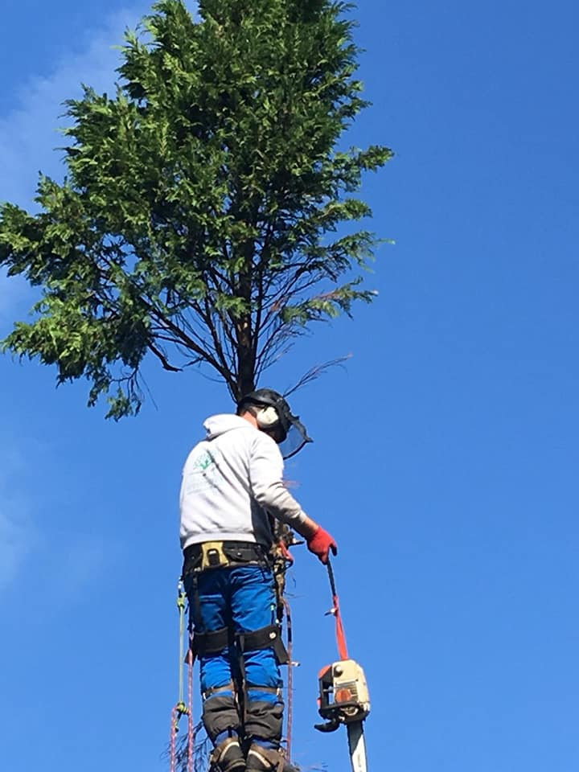
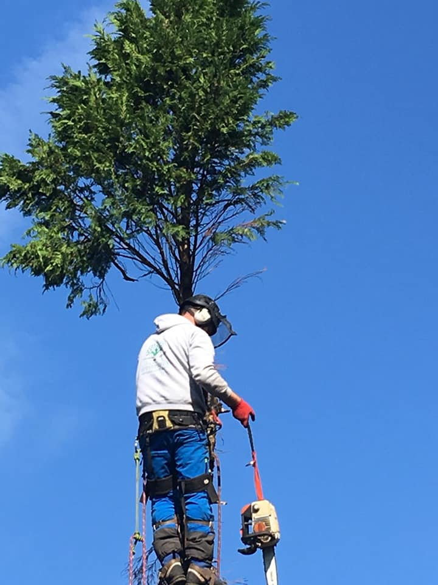

Our Approach: With over 25 years experience in Arboriculture, we apply professional approach to all your Tree Surgery needs to rejuvenate your outdoor spaces. We look forward to improving your outdoor living space.
Our Service: We offer a free no obligation quote, which also comes with complimentary advisory service, where we will recommend any works we deem necessary, We can organise planning applications for any trees protected by tree preservation orders.
More About Edge Tree Surgeons: Edge Tree Surgeons primary aim is to maintain of health of trees with public safety always in mind. Managing and sustaining the trees of the future in the North West of England Jack Lumber
Managing Director: I have 24 years working in arboriculture services I have a gained a wide set of skills and experience
• CS30 Chainsaw Maintenance and Cross Cutting
• CS31 Chainsaws – Felling of Small Trees
• CS38 Climb Trees and Perform Ariel Rescue
• CS39 Operate a Chain Saw from a Rope and Harness
• CS41 Undertake Sectional Felling
• City & Guilds Phase 2 Arboriculture
• NPTC Level 2 Certificate of Competence in Manually Fed Wood Chipper Operatios
• First Aid Training
 
